Show R Code
set.seed(123)
e <- rnorm(100, mean = 0, sd = 1)
ggAcf(e, lag.max = 20) +
labs(title = "ACF — White Noise") +
theme_ts()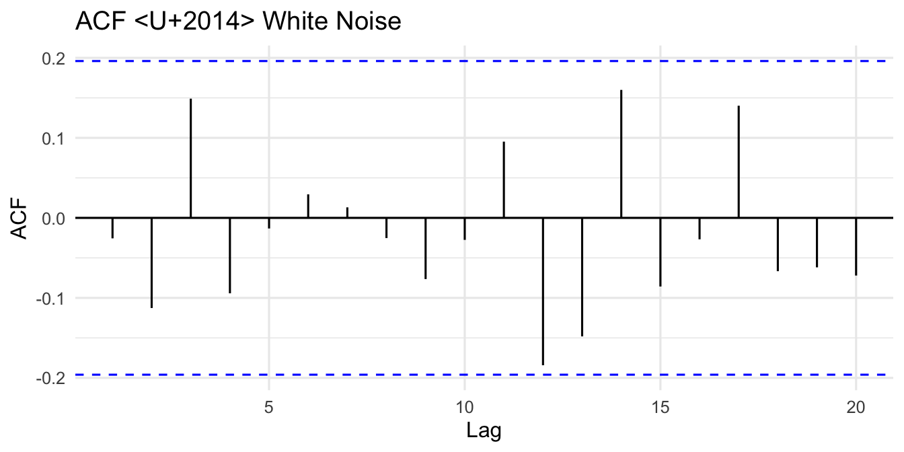
The ARIMA (AutoRegressive Integrated Moving Average) model is one of the most widely used statistical methods for time series forecasting. The Box-Jenkins methodology — developed by George Box and Gwilym Jenkins — provides a systematic four-stage approach for identifying, estimating, validating, and applying ARIMA models.
Four basic model types are involved:
| Model | Acronym | Description |
|---|---|---|
| Autoregressive | AR | Current value depends on its own past values |
| Moving Average | MA | Current value depends on past error terms |
| Mixed Autoregressive and Moving Average | ARMA | Combination of AR and MA |
| Mixed Autoregressive Integrated Moving Average | ARIMA | ARMA applied to differenced series |
A \(p\)th-order autoregressive model, AR(\(p\)), is:
\[ y_t = \phi_0 + \phi_1 y_{t-1} + \phi_2 y_{t-2} + \cdots + \phi_p y_{t-p} + \varepsilon_t \tag{1} \]
where:
Using the backward shift operator \(B\), Equation (1) becomes:
\[ (1 - \phi_1 B - \phi_2 B^2 - \cdots - \phi_p B^p)\,y_t = \phi_0 + \varepsilon_t \]
\[ y_t = \phi_0 + \phi_1 y_{t-1} + \varepsilon_t \tag{2} \]
\[ \Rightarrow (1 - \phi_1 B)\,y_t = \phi_0 + \varepsilon_t \tag{3} \]
The current value at time \(t\) equals the mean plus a contribution from one period back, plus the error term.
A \(q\)th-order moving average model, MA(\(q\)), is:
\[ y_t = \phi_0 + \varepsilon_t + \theta_1 \varepsilon_{t-1} + \theta_2 \varepsilon_{t-2} + \cdots + \theta_q \varepsilon_{t-q} \tag{4} \]
where:
In backshift notation:
\[ y_t = \phi_0 + (1 + \theta_1 B + \theta_2 B^2 + \cdots + \theta_q B^q)\,\varepsilon_t \]
\[ y_t = \phi_0 + \theta_1 \varepsilon_{t-1} + \varepsilon_t \tag{5} \]
\[ \Rightarrow y_t = \phi_0 + (1 + \theta_1 B)\,\varepsilon_t \]
ARMA(\(p,q\)) combines AR order \(p\) and MA order \(q\):
\[ y_t = \phi_0 + \phi_1 y_{t-1} + \cdots + \phi_p y_{t-p} + \varepsilon_t + \theta_1 \varepsilon_{t-1} + \cdots + \theta_q \varepsilon_{t-q} \tag{6} \]
In backshift notation:
\[ (1 - \phi_1 B - \cdots - \phi_p B^p)\,y_t = \phi_0 + (1 + \theta_1 B + \cdots + \theta_q B^q)\,\varepsilon_t \tag{7} \]
\[ y_t = \phi_0 + \phi_1 y_{t-1} + \theta_1 \varepsilon_{t-1} + \varepsilon_t \]
\[ \Rightarrow (1 - \phi_1 B)\,y_t = \phi_0 + (1 + \theta_1 B)\,\varepsilon_t \]
When the stationarity assumption is not fulfilled, the series must be differenced \(d\) times to achieve stationarity. The resulting model is ARIMA(\(p,d,q\)).
Let \(w_t = y_t - y_{t-1}\) (first difference, assumed stationary). Then:
\[ w_t = \phi_0 + \phi_1 w_{t-1} + \theta_1 \varepsilon_{t-1} + \varepsilon_t \tag{8} \]
\[ (1 - \phi_1 B)\,w_t = \phi_0 + (1 + \theta_1 B)\,\varepsilon_t \tag{9} \]
Setting \(\phi_0 = 0\) and substituting \(w_t = (1 - B)y_t\):
\[ (1 - \phi_1 B)(1 - B)\,y_t = (1 + \theta_1 B)\,\varepsilon_t \]
Expanding both sides:
\[ y_t - y_{t-1} - \phi_1 y_{t-1} + \phi_1 y_{t-2} = \varepsilon_t + \theta_1 \varepsilon_{t-1} \tag{10} \]
Solving for \(y_t\):
\[ y_t = (1 + \phi_1) y_{t-1} - \phi_1 y_{t-2} + \varepsilon_t + \theta_1 \varepsilon_{t-1} \tag{11} \]
Equation (11) resembles ARIMA(2,0,1), but it remains ARIMA(1,1,1) — the coefficients do not independently satisfy stationarity conditions for a second-order AR model.
Exercise: Write the backward shift operator formulations for:
For series exhibiting a seasonal component, seasonal differencing is required to remove the seasonality effect.
Let \(z_t\) be the seasonally differenced series:
\[ z_t = y_t - y_{t-12} \quad \text{(monthly)} \qquad z_t = y_t - y_{t-4} \quad \text{(quarterly)} \]
If \(z_t\) is still not stationary, apply regular differencing: \(w_t = z_t - z_{t-1}\).
General SARIMA notation: \(\text{SARIMA}(p,d,q)(P,D,Q)_s\)
| Parameter | Meaning |
|---|---|
| \(p\) | Non-seasonal AR order |
| \(d\) | Non-seasonal differencing order |
| \(q\) | Non-seasonal MA order |
| \(P\) | Seasonal AR order |
| \(D\) | Seasonal differencing order |
| \(Q\) | Seasonal MA order |
| \(s\) | Length of seasonal period |
Example: ARIMA\((1,1,1)(1,1,1)_{12}\): \(p=1\), \(d=1\), \(q=1\) (non-seasonal); \(P=1\), \(D=1\), \(Q=1\) (seasonal); \(s=12\) (monthly data).
Step 1 — Non-seasonal part ARIMA(1,1,2):
\[ (1 - \phi_1 B)(1 - B)(1 - B^4)\,y_t = (1 + \theta_1 B + \theta_2 B^2)\,\varepsilon_t \]
Step 2 — Seasonal part SARIMA(1,1,1):
\[ (1 - \Phi_1 B^4)(1 - B^4)\,y_t = (1 + \Theta_1 B^4)\,\varepsilon_t \]
Step 3 — Combined model:
\[ (1 - \phi_1 B)(1 - B)(1 - \Phi_1 B^4)(1 - B^4)\,y_t = (1 + \theta_1 B + \theta_2 B^2)(1 + \Theta_1 B^4)\,\varepsilon_t \]
Exercise: Write the backward shift operator formulations for:
The Box-Jenkins methodology involves four iterative stages:
| Stage | Name | Description |
|---|---|---|
| 1 | Model Identification | Use ACF/PACF and ADF test to determine \(p\), \(d\), \(q\) |
| 2 | Model Estimation | Estimate parameters using OLS or MLE |
| 3 | Model Validation | Check residuals for white noise (Ljung-Box, AIC, BIC) |
| 4 | Model Application | Generate forecasts from the best model |
If validation fails, return to Stage 1 and revise the model.
General identification rules:
The ACF measures the linear correlation between observations separated by lag \(k\):
\[ r_k = \frac{\text{Cov}(y_t,\, y_{t+k})}{\sqrt{\text{Var}(y_t)\,\text{Var}(y_{t+k})}} \tag{12} \]
At lag 1:
\[ r_1 = \frac{\text{Cov}(y_t,\, y_{t+1})}{\sqrt{\text{Var}(y_t)\,\text{Var}(y_{t+1})}} \tag{13} \]
Under stationarity, \(\text{Var}(y_t) = \text{Var}(y_{t-k}) = \sigma^2\), so:
\[ r_k = \frac{\text{Cov}(y_t,\, y_{t+k})}{\text{Var}(y_t)} \tag{14} \]
The approximate 95% confidence band for each ACF coefficient is:
\[ r_k \pm \frac{1.96}{\sqrt{T}} \tag{15} \]
For \(y_t = \phi_0 + \varepsilon_t\) with \(\varepsilon_t \overset{iid}{\sim} (0, \sigma_\varepsilon^2)\), setting \(\phi_0 = 0\):
At lag 0:
\[ r_0 = \frac{E(\varepsilon_t^2)}{\sigma_\varepsilon^2} = 1 \]
At lag \(k > 0\):
\[ r_k = \frac{E(\varepsilon_t\,\varepsilon_{t+k})}{\sigma_\varepsilon^2} = 0 \quad \text{(errors are independent)} \]
All autocorrelations at lags \(k > 0\) are zero. A white noise ACF shows all spikes within the confidence bounds.

From Chapter 4, for \(y_t = \phi_1 y_{t-1} + \varepsilon_t\) (with \(\phi_0 = 0\)):
Multiplying both sides by \(y_{t-k}\) and taking expectations:
\[ \gamma_1 = \phi_1\,\gamma_0 \implies r_1 = \phi_1 \]
In general, by the Yule-Walker equations:
\[ \gamma_k = \phi_1^k\,\gamma_0 \implies r_k = \phi_1^k \tag{16} \]
Pattern:
set.seed(111)
ar1_pos <- arima.sim(model = list(order = c(1,0,0), ar = 0.7), n = 100)
ar1_neg <- arima.sim(model = list(order = c(1,0,0), ar = -0.7), n = 100)
p_pos <- ggAcf(ar1_pos, lag.max = 20) +
labs(title = expression(phi[1] == 0.7 ~ " (positive)")) + theme_ts()
p_neg <- ggAcf(ar1_neg, lag.max = 20) +
labs(title = expression(phi[1] == -0.7 ~ " (negative)")) + theme_ts()
grid.arrange(p_pos, p_neg, ncol = 2)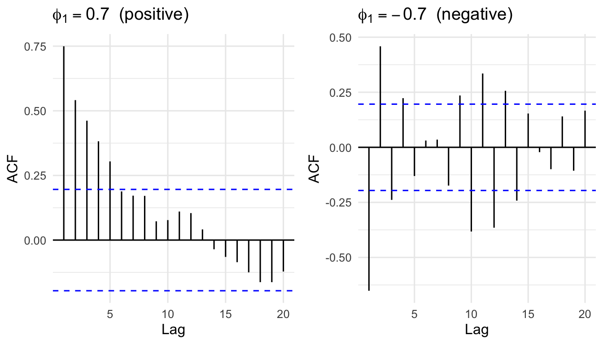
Example: For AR(1) with \(\phi_1 = 0.7\), theoretical ACF values:
\[r_1 = 0.7^1 = 0.700, \quad r_2 = 0.7^2 = 0.490, \quad r_3 = 0.7^3 = 0.343, \quad \ldots\]
Exercise for AR(2): For \(y_t = \phi_0 + \phi_1 y_{t-1} + \phi_2 y_{t-2} + \varepsilon_t\), prove that:
\[r_1 = \frac{\phi_1}{1 - \phi_2}, \qquad r_2 = \frac{\phi_1^2 + \phi_2(1+\phi_2)}{1-\phi_2}\]
For \(y_t = \phi_0 + \theta_1 \varepsilon_{t-1} + \varepsilon_t\):
\[ \text{Var}(y_t) = \gamma_0 = (1 + \theta_1^2)\,\sigma_\varepsilon^2 \]
\[ \gamma_1 = \theta_1\,\sigma_\varepsilon^2 \tag{17} \]
\[ \gamma_k = 0 \quad \text{for } k \geq 2 \]
Hence:
\[ r_1 = \frac{\theta_1}{1 + \theta_1^2}, \qquad r_k = 0 \text{ for } k \geq 2 \tag{18} \]
Pattern: ACF has exactly \(q\) significant spikes (cuts off after lag \(q\)).
Example: MA(1) with \(\theta_1 = 0.7\):
\[r_1 = \frac{0.7}{1 + 0.7^2} = \frac{0.7}{1.49} = 0.4698 \tag{19}\]
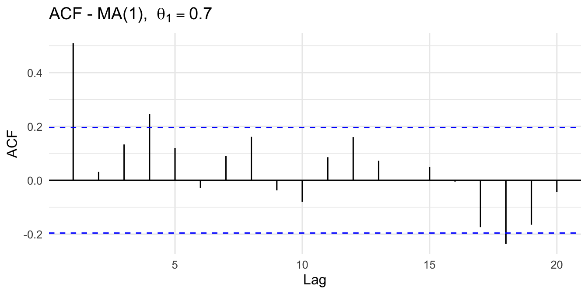
Exercise for MA(2): For \(y_t = \phi_0 + \theta_1\varepsilon_{t-1} + \theta_2\varepsilon_{t-2} + \varepsilon_t\), prove that:
\[r_1 = \frac{\theta_1 + \theta_1\theta_2}{1 + \theta_1^2 + \theta_2^2}, \qquad r_2 = \frac{\theta_2}{1 + \theta_1^2 + \theta_2^2}\]
The PACF measures the correlation between \(y_t\) and \(y_{t-k}\) after removing the linear effects of the intermediate lags \(y_{t-1}, y_{t-2}, \ldots, y_{t-k+1}\).
The PACF is computed iteratively via the Yule-Walker equations. The PACF at lag \(k\), denoted \(\alpha_k\), is:
\[ \alpha_k = \frac{r_k - \displaystyle\sum_{j=1}^{k-1} \phi_j^{(k-1)}\,r_{k-j}} {1 - \displaystyle\sum_{j=1}^{k-1} \phi_j^{(k-1)}\,r_j} \tag{20} \]
with the recursion \(\phi_j^{(k)} = \phi_j^{(k-1)} - \alpha_k\,\phi_{k-j}^{(k-1)}\).
| Model | ACF | PACF | Example |
|---|---|---|---|
| AR(\(p\)) | The coefficients show a decay pattern | There are \(k\) significant spike(s) | If the PACF shows that there is one significant spike observed at lag 1 and ACF exhibits a decay pattern, the suggested model is AR(1). |
| MA(\(q\)) | There are \(k\) significant spike(s) | The coefficients show a decay pattern | If the ACF shows that there is one significant spike observed at lag 1 and PACF exhibits a decay pattern, the suggested model is MA(1). |
| ARMA(\(p\),\(q\)) | There are \(k\) significant spike(s) | There are \(k\) significant spike(s) | If the ACF shows that there is one significant spike observed at lag 1 and PACF shows that there is one significant spike observed at lag 1, the suggested model is ARMA(1,1). |
set.seed(42)
sim_ar1 <- arima.sim(model = list(order=c(1,0,0), ar=0.7), n=200)
sim_ma1 <- arima.sim(model = list(order=c(0,0,1), ma=0.7), n=200)
sim_arma <- arima.sim(model = list(order=c(1,0,1), ar=0.7, ma=0.5), n=200)
p1 <- ggAcf(sim_ar1, lag.max=20) + labs(title="AR(1) — ACF") + theme_ts()
p2 <- ggPacf(sim_ar1, lag.max=20) + labs(title="AR(1) — PACF") + theme_ts()
p3 <- ggAcf(sim_ma1, lag.max=20) + labs(title="MA(1) — ACF") + theme_ts()
p4 <- ggPacf(sim_ma1, lag.max=20) + labs(title="MA(1) — PACF") + theme_ts()
p5 <- ggAcf(sim_arma, lag.max=20) + labs(title="ARMA(1,1) — ACF") + theme_ts()
p6 <- ggPacf(sim_arma, lag.max=20) + labs(title="ARMA(1,1) — PACF") + theme_ts()
grid.arrange(p1, p2, p3, p4, p5, p6, nrow=3)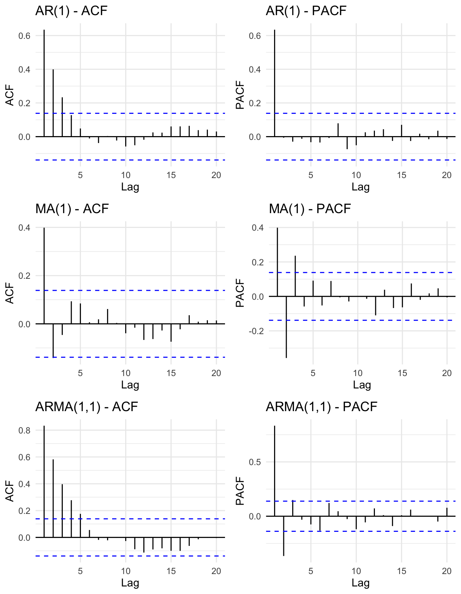
We demonstrate the full four-stage Box-Jenkins procedure using S&P 500 E-mini Futures (ES=F) daily adjusted close prices, April–December 2025, downloaded directly from Yahoo Finance via the quantmod package.
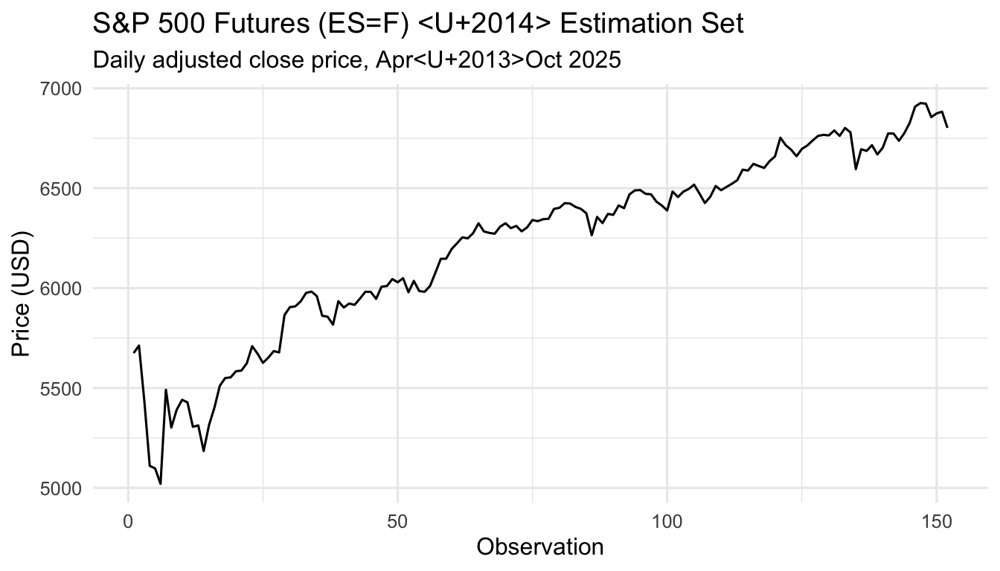
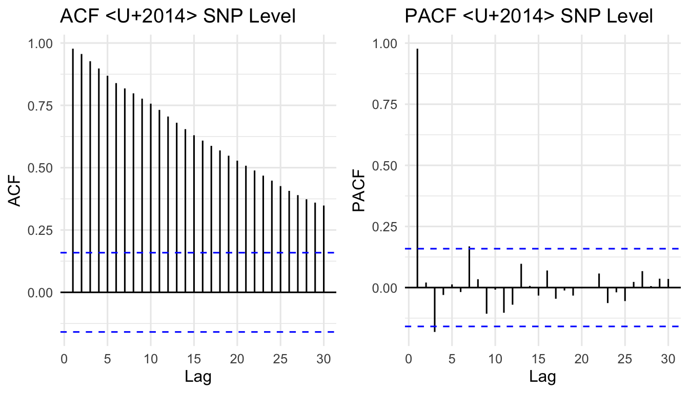
Augmented Dickey-Fuller Test
data: est_snp
Dickey-Fuller = -2.857, Lag order = 5, p-value = 0.2192
alternative hypothesis: stationarySince \(p\)-value \(> 0.05\), we fail to reject \(H_0\) — the series is non-stationary.
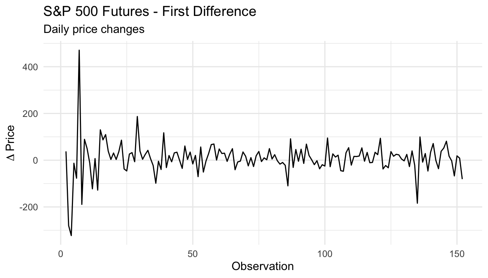
Augmented Dickey-Fuller Test
data: na.omit(diff_snp)
Dickey-Fuller = -6.1097, Lag order = 5, p-value = 0.01
alternative hypothesis: stationarySince \(p\)-value \(\leq 0.05\), we reject \(H_0\) — the differenced series is stationary. Order of differencing: \(d = 1\).
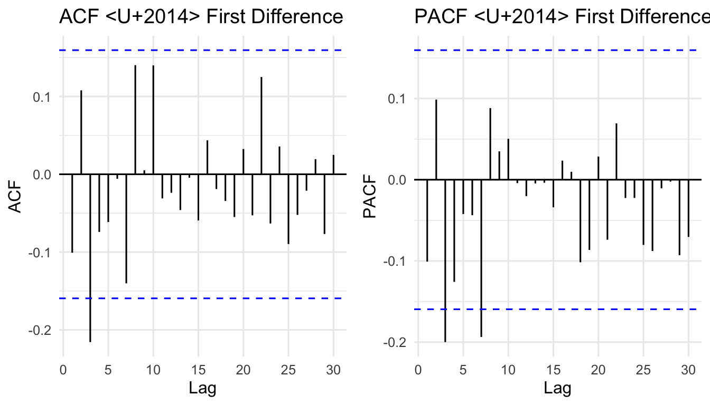
Suggested model: ARIMA(2,1,1)
Competing models to compare: ARIMA(1,1,0) and ARIMA(2,1,2).
Series: value
Model: ARIMA(2,1,1)
Coefficients:
ar1 ar2 ma1
0.6848 0.0219 -0.7805
s.e. 0.2093 0.0947 0.1924
sigma^2 estimated as 5408: log likelihood=-861.72
AIC=1731.45 AICc=1731.72 BIC=1743.52Estimated equation for ARIMA(2,1,1):
\[ (1 - \hat\phi_1 B - \hat\phi_2 B^2)(1 - B)\,y_t = (1 + \hat\theta_1 B)\,\varepsilon_t \tag{21} \]
Exercise: Write the estimated equations for ARIMA(1,1,0) and ARIMA(2,1,2) using the coefficient values from report().
The Ljung-Box statistic tests whether residuals are white noise:
\[ Q^*_{\text{calc}} = T(T+2)\sum_{k=1}^{h} \frac{r_k^2}{T-k} \tag{22} \]
approximately \(\chi^2\) with \((h - p - q)\) degrees of freedom.
If \(p\)-value \(> 0.05\) → fail to reject \(H_0\) → residuals are white noise → model is well-specified.
Box-Ljung test
data: resid211$.resid
X-squared = 21.023, df = 16, p-value = 0.1776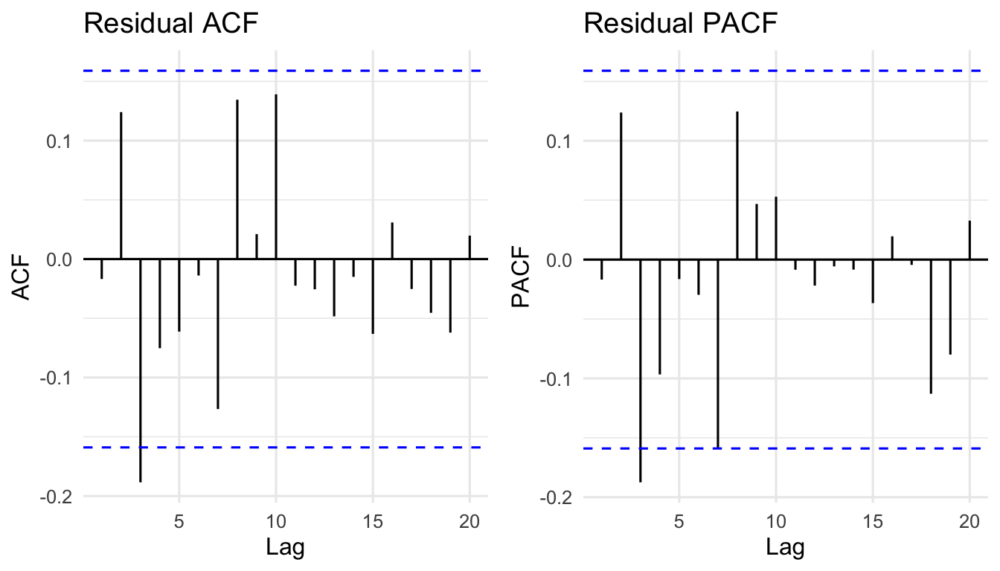
Akaike’s Information Criterion (AIC):
\[ \text{AIC} = -2\log(L) + 2(p + q + k + 1) \tag{23} \]
where \(L\) is the likelihood, and \(k = 1\) if \(\phi_0 \neq 0\), else \(k = 0\).
Corrected AIC (AICc):
\[ \text{AICc} = \text{AIC} + \frac{2(p+q+k+1)(p+q+k+2)}{T - p - q - k - 2} \tag{24} \]
Bayesian Information Criterion (BIC):
\[ \text{BIC} = \text{AIC} + [\log(T) - 2](p + q + k + 1) \tag{25} \]
Lower AIC / AICc / BIC = better model. BIC penalises complexity more heavily than AIC.
# A tibble: 3 x 4
Model AIC AICc BIC
<chr> <dbl> <dbl> <dbl>
1 ARIMA(2,1,2) 1725. 1725. 1743.
2 ARIMA(1,1,0) 1728. 1728. 1734.
3 ARIMA(2,1,1) 1731. 1732. 1744.The model with the lowest AIC/BIC is selected as the best model.
When two ARMA models produce the same series, they exhibit parameter redundancy. For example, a white noise process \(y_t = \varepsilon_t\) can be rewritten as:
\[ y_t = -0.5\,y_{t-1} + \varepsilon_t + 0.5\,\varepsilon_{t-1} \tag{26} \]
which superficially resembles ARMA(1,1) but is not a genuinely different model. Always inspect ACF/PACF diagnostics to avoid over-parameterisation.
Example: ARIMA(1,1,1) forecast derivation
Expanded equation (from Equation 11):
\[ y_t = (1 + \phi_1)\,y_{t-1} - \phi_1\,y_{t-2} + \varepsilon_t + \theta_1\,\varepsilon_{t-1} \tag{27} \]
One-step-ahead forecast (substitute \(t = T+1\), set \(\varepsilon_{T+1} = 0\)):
\[ \hat{y}_{T+1|T} = (1 + \hat\phi_1)\,y_T - \hat\phi_1\,y_{T-1} + \hat\theta_1\,\varepsilon_T \tag{28} \]
Two-step-ahead forecast (\(\varepsilon_{T+2} = \varepsilon_{T+1} = 0\), replace \(y_{T+1}\) with \(\hat{y}_{T+1|T}\)):
\[ \hat{y}_{T+2|T} = (1 + \hat\phi_1)\,\hat{y}_{T+1|T} - \hat\phi_1\,y_T \tag{29} \]
The process continues for all future periods \(h = 3, 4, \ldots\)
Exercise: Using the estimated ARIMA(2,1,1) coefficients and the last three observed values plus their residuals, prove the one-step and two-step-ahead point forecasts manually.
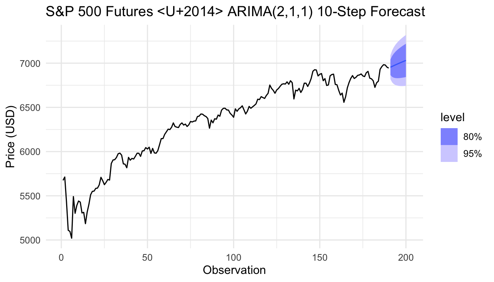
We now apply the full Box-Jenkins procedure to the Malaysia IPI Manufacturing Index (monthly, January 2015 to November 2025) — a series with both trend and seasonality.
The steps for SARIMA identification are:
Estimation set: 82 observationsEvaluation set: 49 observations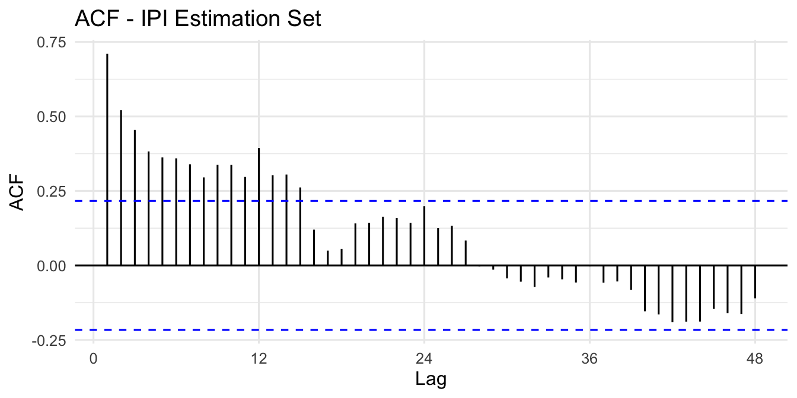
Augmented Dickey-Fuller Test
data: sest
Dickey-Fuller = -3.9668, Lag order = 4, p-value = 0.0153
alternative hypothesis: stationaryEven if the ADF test indicates stationarity, the sinusoidal ACF pattern indicates a seasonal component — proceed with seasonal differencing.
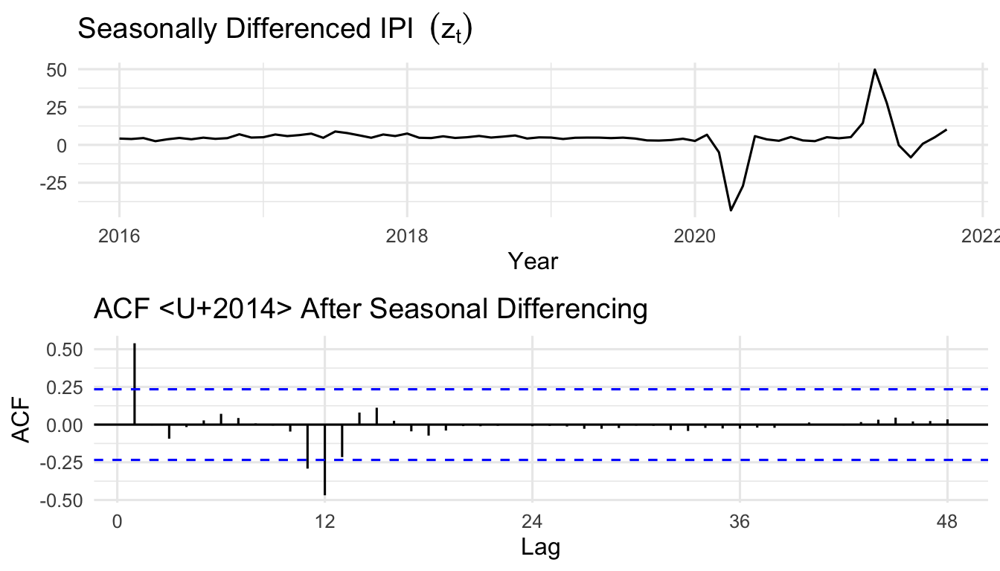
If the ADF test on \(z_t\) still fails to reject \(H_0\) (\(p > 0.05\)), apply a further first-order difference:
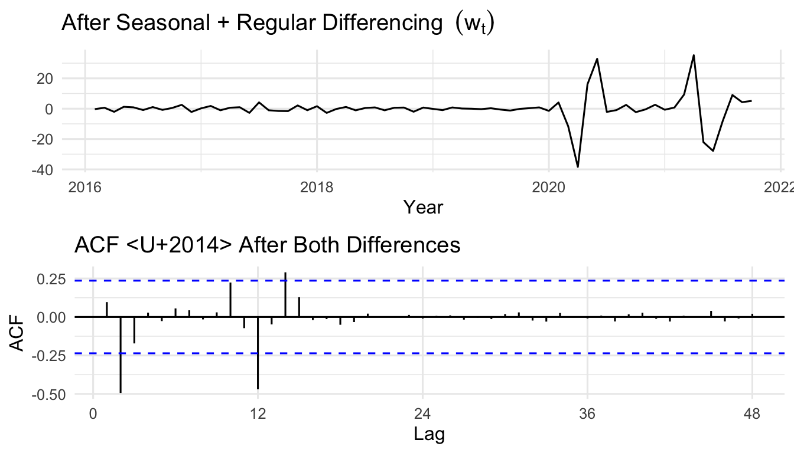
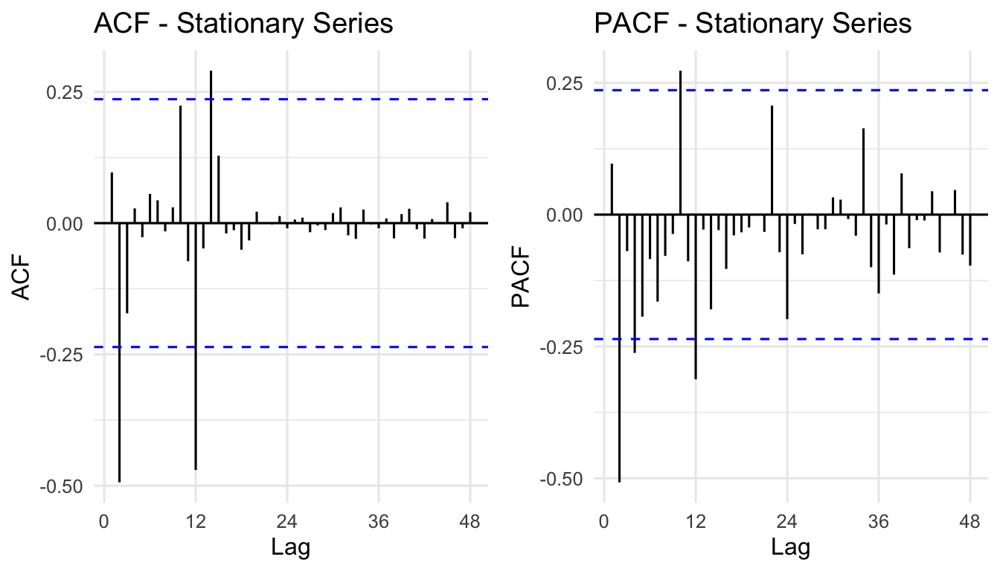
Reading the plots:
| Plot | Significant spike location | Interpretation |
|---|---|---|
| ACF | Lag 1 (non-seasonal) | MA(1) → \(q = 1\) |
| ACF | Lag 12 (seasonal) | SMA(1) → \(Q = 1\) |
| PACF | Lag 1 (non-seasonal) | AR(1) → \(p = 1\) |
| PACF | Lag 12 (seasonal) | SAR(1) → \(P = 1\) |
Suggested model: SARIMA\((1,1,1)(1,1,1)_{12}\)
Competing models: SARIMA\((2,1,2)(1,1,1)_{12}\) and SARIMA\((1,1,0)(1,1,1)_{12}\)
sest_tbl <- as_tsibble(sest)
seva_tbl <- as_tsibble(seva)
ipi_tbl <- as_tsibble(ipi_ts)
smodel1 <- sest_tbl |> model(ARIMA(value ~ pdq(1,1,1) + PDQ(1,1,1)))
smodel2 <- sest_tbl |> model(ARIMA(value ~ pdq(2,1,2) + PDQ(1,1,1)))
smodel3 <- sest_tbl |> model(ARIMA(value ~ pdq(1,1,0) + PDQ(1,1,1)))
report(smodel1)Series: value
Model: ARIMA(1,1,1)(1,1,1)[12]
Coefficients:
ar1 ma1 sar1 sma1
-0.3961 0.6660 -0.0953 -0.7322
s.e. 0.2099 0.1593 0.3314 0.4365
sigma^2 estimated as 44.88: log likelihood=-232.53
AIC=475.05 AICc=476.01 BIC=486.23Estimated equation for SARIMA\((1,1,1)(1,1,1)_{12}\):
\[ (1 - \hat\phi_1 B)(1 - B)(1 - \hat\Phi_1 B^{12})(1 - B^{12})\,y_t = (1 + \hat\theta_1 B)(1 + \hat\Theta_1 B^{12})\,\varepsilon_t \tag{30} \]
Exercise: Write the estimated equations for:
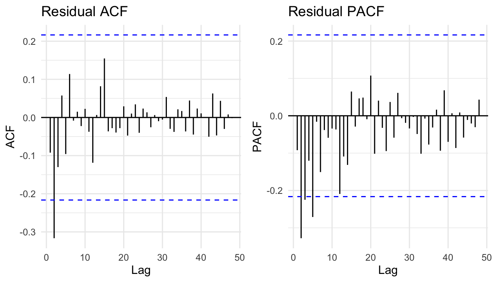
The Box-Pierce statistic:
\[ Q_{\text{calc}} = (T - d)\sum_{k=1}^{h} r_k^2 \tag{31} \]
The Ljung-Box statistic (preferred for small samples):
\[ Q^*_{\text{calc}} = T(T+2)\sum_{k=1}^{h}\frac{r_k^2}{T-k} \tag{32} \]
Both are approximately \(\chi^2\) distributed with \((h - p - q)\) degrees of freedom.
How many lags to use:
# Ljung-Box p-values for all three models
lb_results <- data.frame(
Model = c("SARIMA(1,1,1)(1,1,1)[12]",
"SARIMA(2,1,2)(1,1,1)[12]",
"SARIMA(1,1,0)(1,1,1)[12]"),
p_value = c(
Box.test(residuals(smodel1)$.resid, lag=24, type="Ljung-Box", fitdf=4)$p.value,
Box.test(residuals(smodel2)$.resid, lag=24, type="Ljung-Box", fitdf=6)$p.value,
Box.test(residuals(smodel3)$.resid, lag=24, type="Ljung-Box", fitdf=3)$p.value
)
)
lb_results$Decision <- ifelse(lb_results$p_value > 0.05,
"Fail to reject H0", "Reject H0")
lb_results$Conclusion <- ifelse(lb_results$p_value > 0.05,
"White noise", "Not white noise")
print(lb_results) Model p_value Decision Conclusion
1 SARIMA(1,1,1)(1,1,1)[12] 0.5174481 Fail to reject H0 White noise
2 SARIMA(2,1,2)(1,1,1)[12] 0.9650902 Fail to reject H0 White noise
3 SARIMA(1,1,0)(1,1,1)[12] 0.1480511 Fail to reject H0 White noiseAll models that pass the Ljung-Box test are candidate models. Select the best using AIC/BIC:
# A tibble: 3 x 4
Model AIC AICc BIC
<chr> <dbl> <dbl> <dbl>
1 SARIMA(2,1,2)(1,1,1)[12] 457. 459. 473.
2 SARIMA(1,1,1)(1,1,1)[12] 475. 476. 486.
3 SARIMA(1,1,0)(1,1,1)[12] 478. 479. 487.The model with the lowest AIC, AICc, and BIC is selected as the best model.
Use the best model (refitted to the full IPI series) to generate a 12-step-ahead forecast:
# Identify best model (lowest AIC among those with white noise residuals)
best_sarima <- sest_tbl |> model(ARIMA(value ~ pdq(2,1,2) + PDQ(1,1,1)))
best_sarima |>
refit(ipi_tbl) |>
forecast(h = 12) |>
autoplot(ipi_tbl, level = c(80, 95)) +
labs(title = "Malaysia IPI Manufacturing — 12-Month Ahead Forecast",
subtitle = "SARIMA(2,1,2)(1,1,1)[12]",
x = "Year", y = "Index") +
theme_ts()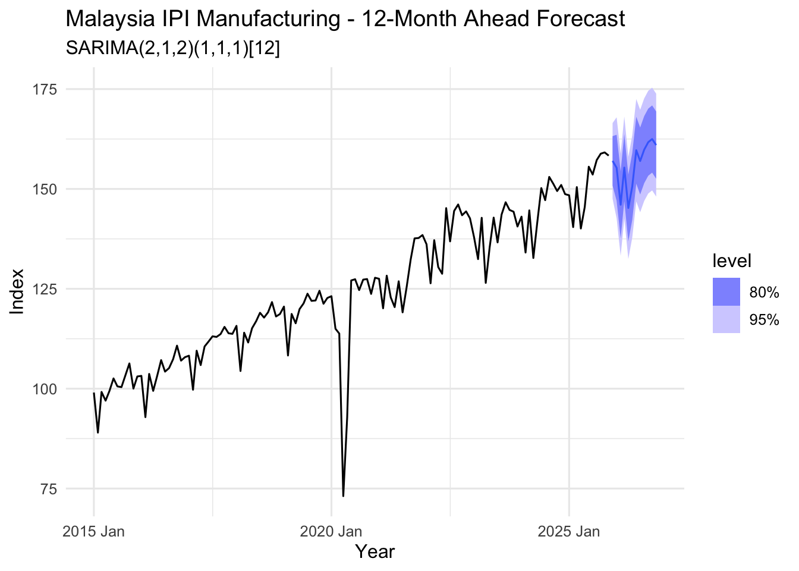
| Stage | Task | Tools |
|---|---|---|
| 1 — Identification | Determine \(p\), \(d\), \(q\) (and \(P\), \(D\), \(Q\) for seasonal) | Time series plot, ACF, PACF, ADF test |
| 2 — Estimation | Estimate model parameters | OLS, Maximum Likelihood (R: ARIMA()) |
| 3 — Validation | Confirm residuals are white noise; select best model | Ljung-Box test, AIC, AICc, BIC |
| 4 — Application | Generate point forecasts and prediction intervals | forecast(), confidence bands |
| ACF | PACF | |
|---|---|---|
| AR(\(p\)) | Tails off | Cuts off after lag \(p\) |
| MA(\(q\)) | Cuts off after lag \(q\) | Tails off |
| ARMA(\(p\),\(q\)) | Tails off | Tails off |
| Non-stationary | Slow decay | Large at lag 1 |
| Seasonal | Peaks at seasonal lags (\(s\), \(2s\), …) | Peaks at seasonal lags |
| Criterion | Formula | Penalty |
|---|---|---|
| AIC | \(-2\log(L) + 2k\) | Moderate |
| AICc | \(\text{AIC} + \dfrac{2k(k+1)}{T-k-1}\) | Moderate (small sample correction) |
| BIC | \(-2\log(L) + k\log(T)\) | Stronger (grows with \(T\)) |
where $k = p + q + $ (1 if constant included, else 0).